|
Introduction |
Method 1: Brush/Pencil | Method
2: Spot Healing Brush | Method 3: Healing Brush | Method
4:
Patch | Method 5: Content-Aware Move |
| Method 6: Content-Aware Fill |
As mentioned in the previous Step, the Content-Aware Fill is not actually a tool on the toolbar, but instead is included under the Edit menu and is part of the Fill command. Normally, the Fill command simply fills a selection with color, but when using Content-Aware Fill, Photoshop looks at the pixels surrounding a selection and fills that selection area with something that matches what is around it. This time, Photoshop does not try to blend the pixels together, so this method works great on areas with lines and edges. Using the Content-Aware Fill works slightly different from the other tools that we have used so far, so let's get some practice with it.
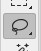
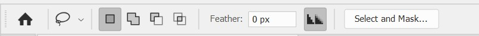
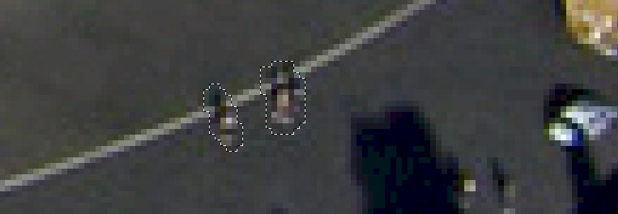
Be careful here that you draw your selection area around only the items that you want to remove. If you try to draw a large circle around both people like this...
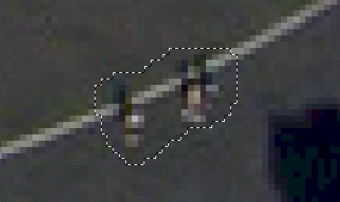
When you apply the Content-Aware Fill you may get something like this...
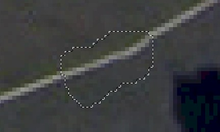
While at first you may be thinking that the line looks good, notice that the line is misshapen on the right side of the selection area. And while yes, the line does go continuously from left to right, the area of the line that is distorted makes it obvious that we have edited the image - which is exactly what we are trying to avoid. This is obviously not an ideal result because we will have to take the time to correct the bad spot. It would be great if we could remove the people and didn't have to worry about fixing a messed up line. Luckily for us, if we make a good enough selection, like the one in direction 3 above, Photoshop will help us out with the line. Keep going to see how this works.
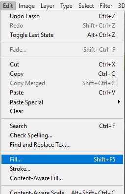
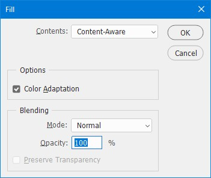
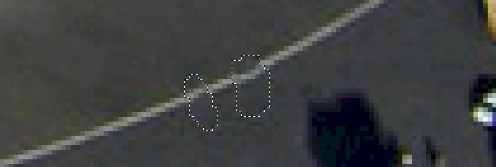
Photoshop was able to look at the surrounding pixels and recognize that the people do not belong, but since there is a line running through the rest of the image - and most importantly there was a line segment between the people, Photoshop continued the line.
By the way, if it did not work for you and you have something like this...
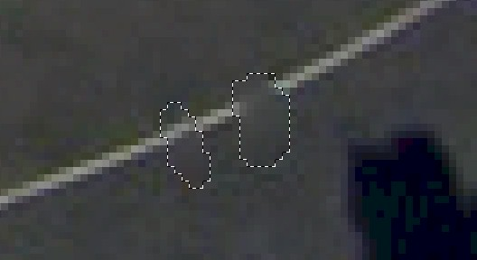
Don't panic - you didn't do anything wrong. Photoshop can be a little picky with how it applies the Content-Aware Fill. Usually if you undo and redo the Content-Aware Fill you can fix the problem. Follow the directions below if Photoshop did not remove one or both of your people.
Keep in mind when using the Content-Aware Fill that Photoshop is not blending anything together this time. It is simply looking at the area surrounding your selection and trying to use that area to replace your selection. Also be aware that it is not necessary for the area around the selection to be simple like with the image we are using (we just have gray concrete and a white line). For example, we can use Content-Aware Fill on images like the one below...
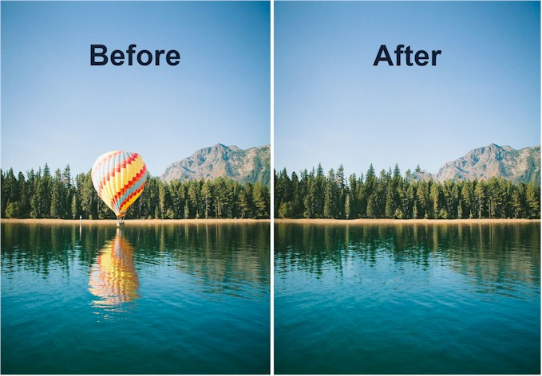
As long as there are similar elements around the object that we are removing (in the picture above, notice that there are trees, sky, and water on both sides of the balloon), Photoshop can handle filling in the spot. If you look closely, you can see how Photoshop replaced the balloon...
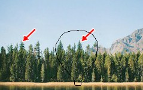
The black outline is where the balloon was, and the red arrows are showing that to remove the balloon, Photoshop simply made a copy of the tree on the left and placed it in the center over the balloon. This method works great if things are generally the same around the selection, but be careful. If there is a collection of different objects around your selection you will get unexpected results. Consider the image below...
Let's say we want to remove the dark red car with the tan roof in the middle. If we make a selection with the Lasso Tool...
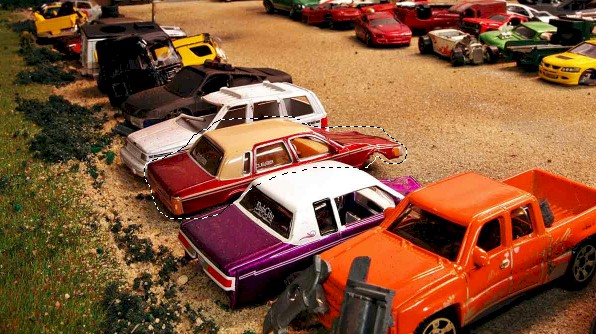
And then apply the Content-Aware Fill, this is what we get...
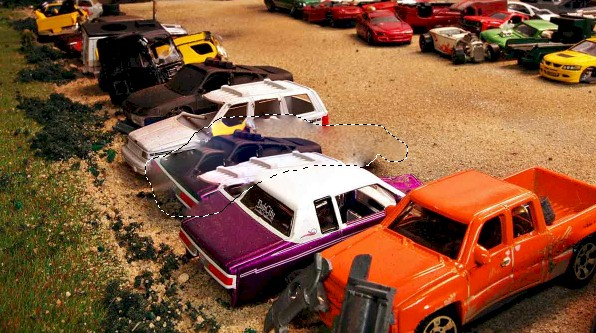
Notice that not only did we not get a picture of the junkyard with the car missing, but that Photoshop simply pulled parts of other cars from around our selection and used them to cover the original car...
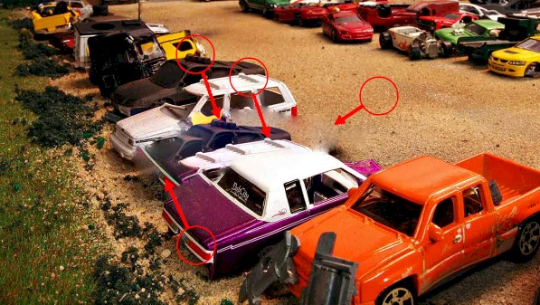
The point here is that if what we are removing is surrounded by other objects, then the Content-Aware Fill will not work. But if our subject has pretty much the same thing on both sides...
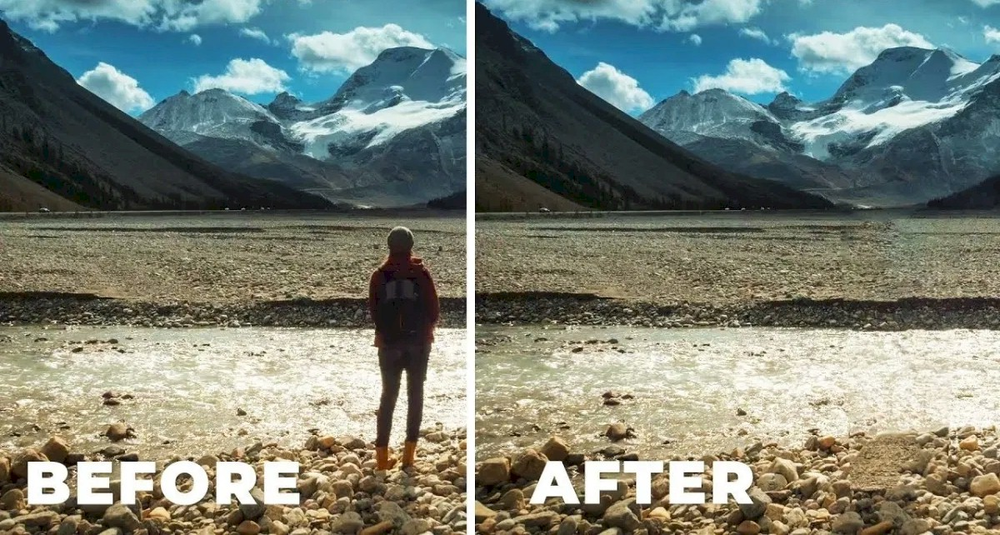
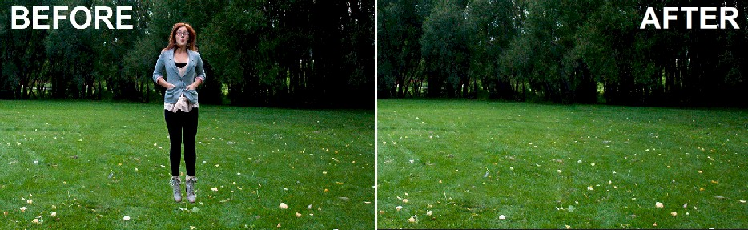
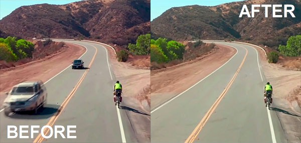
Then we can get good results. It even works on images such as the one below...
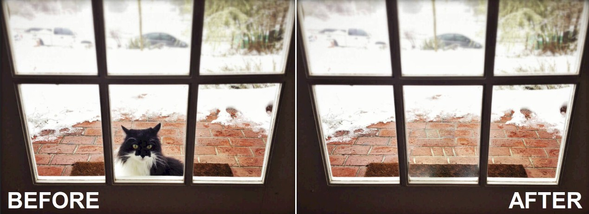
Photoshop was able to recognize that there were windows on either side of the cat and did a pretty good job of removing him. Yeah, the brick lines are not perfect, but it is much easier to use Content-Aware Fill to remove the cat and then correct those lines using one of the other tools we've discussed then it is to try and remove the cat through other means.
At this point you may be thinking 'what if I want to get rid of an object but I don't want Photoshop to use all of the pixels around the object, just some of them'. Well, that's a great point and it leads us to our next tool, which you might have noticed and wondered about all the way back in direction 4. When we opened the Edit menu and went to Fill, sitting just two options below that is something called Content-Aware Fill. So if that was an option in the menu, why didn't we use it first? The answer is simple, it is a more complicated tool that takes a little more explanation, but actually works pretty much the same as using Content-Aware Fill from the Fill window. Since using Content-Aware Fill from the Fill window is easier, it is how most people do it.
When we use the Content-Aware Fill option of the Edit menu, we are able to define exactly what areas of the image Photoshop should use to fill in our selection area. For most of the people and objects we want to remove in our Colosseum image the Content-Aware Fill option in the Fill window will work just fine. So let's get some experience with this tool by removing something from our image that will not look good using the Content-Aware Fill option in the Fill window.
Scroll to the top right-hand corner of the image and locate the white
building circled in the image below... 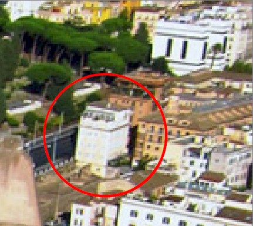
If we make a selection of this building (don't actually make a selection at this point, just keep reading to see what happens)...
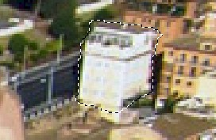
and use the Content-Aware option from the Fill window, this is what we get...
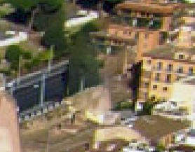
Obviously, this is less than great as the solid tree placed in the middle of the road makes it painfully obvious that we have made an edit here. Let's use the Content-Aware Fill option of the Edit menu to remove the building and see how it goes.
Make a selection of the white building...
Click Edit on the menu bar and then select Content-Aware Fill... 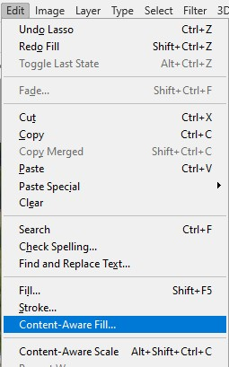
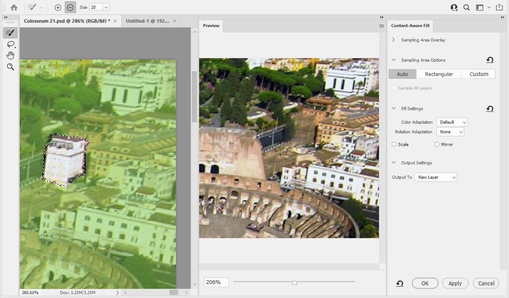
The window is divided into 3 parts:
The left side contains your selection (in this case the white building) and a green tint over the image - that green tint represents the area that Photoshop is using to decide how to fill your selection
The center section is giving you a preview of what your image will look like if you Apply the Content-Aware Fill as it is currently selected
The right side allows you to make changes to various settings
The first thing we want to do is to make sure that any changes we make get applied to our Working layer. Photoshop gives us the option of applying our changes to a new layer (which will require us to merge the new layer with our current layer later on, and we don't want to bother with that), a duplicate layer, or on to our current layer. Let's set the Output To option to current layer to save ourselves some time later on.
In the Output Settings section on the right side of the window, change the
Output To option to Current Layer... 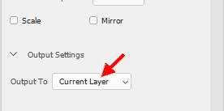
Now let's look at some of the other sections on the right side of the window. The top option on the right is called Sampling Area Overlay...
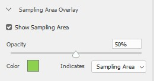
Sampling Area refers to the parts of image that are currently tinted green, and indicated the areas that Photoshop will use when filling in our building. This section allows us to do things like change the color and opacity of the sampling area. We don't really want to mess with any of this stuff so leave it alone. What we do what to mess with is the Sampling Area Options section (which by default should be expanded) just below the Sampling Area Overlay section. By default the Auto option should be selected...
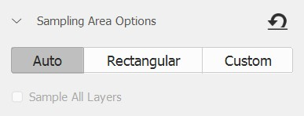
Let's look first at the Rectangular and Custom options to see what they do before using the Auto option to replace our building.
Click the word Rectangular to select that option... 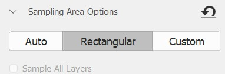
The Rectangular option simply means that Photoshop is using a rectangular region of the image as source material to fill your selection...
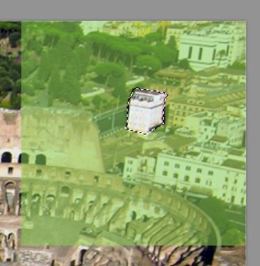
With the rectangular region in green above as our source, this is how Photoshop is replacing our building...
Again, not that great. Let's try something else.
Click the Custom option... 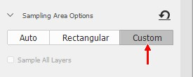 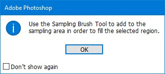
Photoshop should give you the following pop-up message...
With the Custom option selected, Photoshop wants us to paint over our image to define the area to use to fill our selection. This will work great for some images, but for most images the third option - Auto - works best. Let's skip using the Custom option and go straight to Auto (the Auto option will require us to paint on our image to get things to be just right, so we will get some experience with that).
Click OK to remove the pop-up message
Click the Auto option... 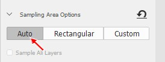 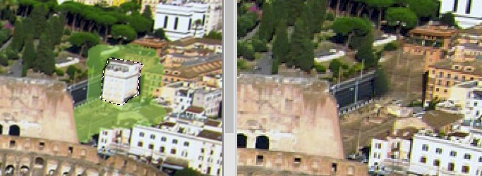
With this option selected, Photoshop will look at the area immediately
surrounding your selection and highlight (turn green) an area that it thinks
would be best to use...
As you can see above, the selection that Photoshop chose on the left creates
basically a big smudge on the right...not really what we want
The area that Photoshop chose was based on the pixels immediately surrounding our selection - Photoshop actually has no way of knowing what the subject of our image is or what will actually look best, it is simply using the pixels adjacent to our selection as a starting point. Let's fine-tune the green area to get a better result.
On the Options bar, select the Add to overlay area option... 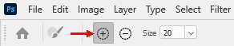
With this little plus icon selected, any area we paint over in our image will be added to the
overlay (will be added to the green area)
Use the [ and ] keys to adjust the size of your brush until it is the size indicated in the image above (Size 20)
On your image, color over the areas indicated below... 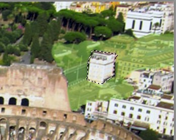 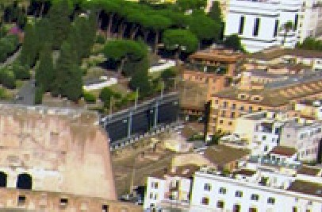
Your image in the preview section should now look like this...
Notice that the road now continues up to the building, which now appears that it
has a front instead of big brownish blob, and that there is no tree in the
middle of the road
If your new building does not look as nice as mine, make adjustments to your overlay area until it does - not that you will lose points if your new building is a big smudge
Once your building looks good, click OK in the bottom right-hand corner of the
window...
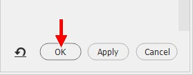
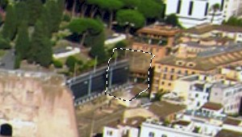
Press Ctrl+D on the keyboard to deselect the area - the building should now be
gone and it should be impossible to tell where it was...
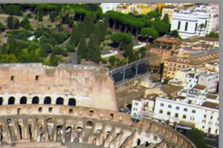
While Content-Aware Fill is an incredibly useful technique, as we have seen it does have some issues. Here are a few things to keep in mind while using Content-Aware Fill:
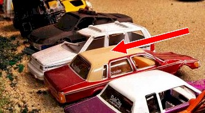
Let's take a minute now to practice using Content-Aware Fill.
For our next tool, we will be using the Remove Tool, which works in a completely different way than any tool we have used so far. Head over to Step 8 to see how it works.